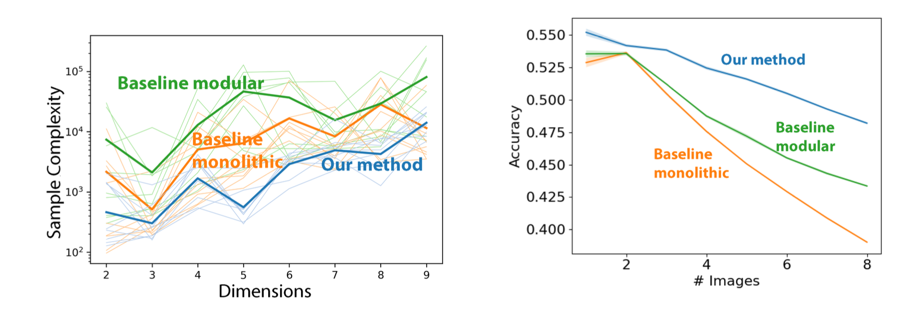
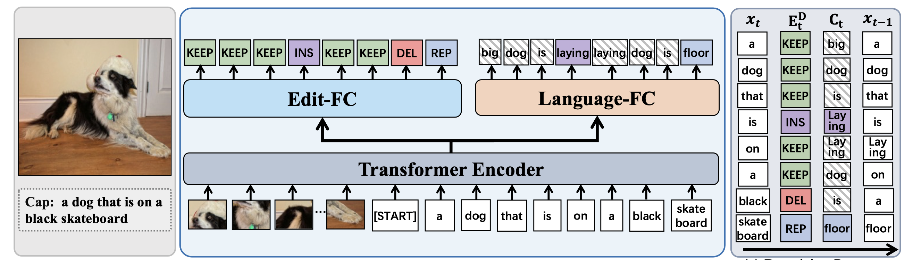
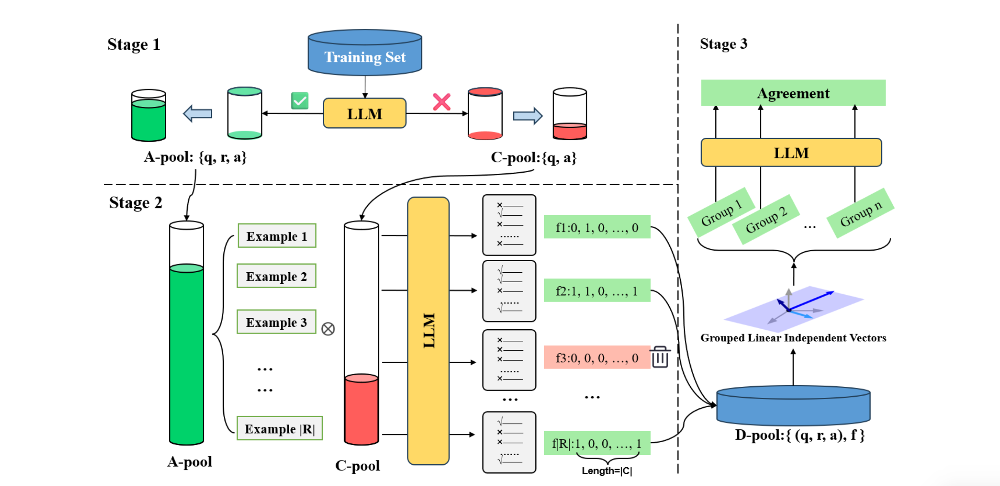
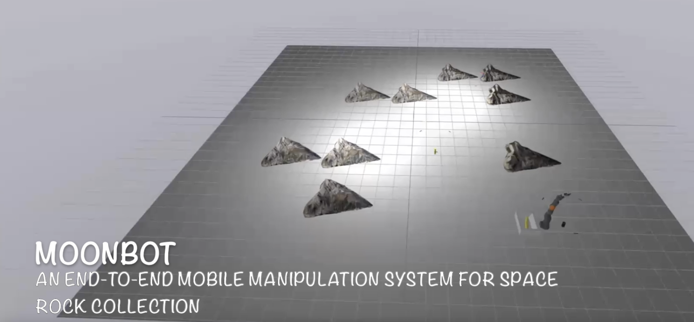

I'm a master's student at MIT CSAIL advised by Prof. Leslie Kaelbling & a senior at MIT, double majoring in EECS and physics.
My intellectual journey has been driven by my desire to deepen our understanding of the physical world and develop embodied intelligent systems informed by this understanding. My research interests lie in generative models for embodied AI and robotics, aiming to design systems capable of reasoning, acting, and adapting in the real world.
I previously worked as an undergraduate researcher at LIS advised by Prof. Leslie Kaelbling and Prof. Tomas Lozano-Perez. I also worked as an undergraduate researcher at RRG advised by Prof. Nicholas Roy.
In my free time, I do figure skating and dance. I love watching musicals and going to art exhibitions. And I enjoy exploring food places and posting them on instagram - I am now the go-to person for food recommendations among my friends.
Updates
- May 2025 Our paper on Streaming Flow Policy is accepted to ICRA 2025 Beyond Pick and Place Workshop!
- Jan 2025 Our paper on Anomaly detection using diffusion models for off-road navigation is accepted to ICRA 2025!
Education
B.S. Double Major in Physics & EECS
Double Minor in Math & Economics
2021 - Present
Selected Courses: Autonomy and Decision Making (Teaching Assistant), Representation, Inference and Reasoning in AI (Teaching Assistant), Machine Learning (Lab Assistant, A+), Algorithm (Tutor, A), Planning under Uncertainty (A+), Robotic Manipulation (A), Computer Vision (A), Signal, system and inference (A), Embedded System (A), Computation Structure (A), Optimization Methods (A)
Research
Sunshine Jiang,
Xiaolin Fang,
Nicholas Roy,
Tomas Lozano-Perez,
Leslie Kaelbling,
Siddharth Ancha,
ICRA 2025 Workshop: Beyond Pick and Place
Website •
Paper •
Appendix •
Video •
Colab Notebook
Sunshine Jiang*,
Travis Manderson,
Laura Brandt,
Yilun Du,
Philip R. Osteen,
Nicholas Roy
Siddharth Ancha,
ICRA 2025
Website •
Paper •
Appendix •
Video •
Github •
Colab Notebook

Breaking Neural Network Scaling Laws with Modularity
Akhilan Boopathy,
Sunshine Jiang,
William Yue,
Jaedong Hwang,
Abhiram Iyer,
Ila R Fiete
ICLR 2025
Paper

DECap: Towards Generalized Explicit Caption Editing via Diffusion Mechanism
Zhen Wang,
Xinyun Jiang,
Jun Xiao,
Tao Chen,
Long Chen
ECCV 2024
Paper

Latent Learningscape Guided In-context Learning
Anlai Zhou,
Sunshine Jiang,
Yifei Liu,
Yiquan Wu,
Kun Kuang,
Jun Xiao
Findings of ACL 2024
Paper
Projects

Moonbot: An End-to-end Mobile Manipulation System for Space Rock Collection
Sunshine Jiang,
Wenqi Ding
MIT 6.4210 Robotic Manipulation
Video •
Github •
Paper
Sunshine Jiang,
Wenqi Ding,
Xinran Wang,
Stephen Yang,
Qianru Lao
MIT 6.5940 TinyML and Efficient Deep Learning Computing
Github •
Paper •
Demo Video